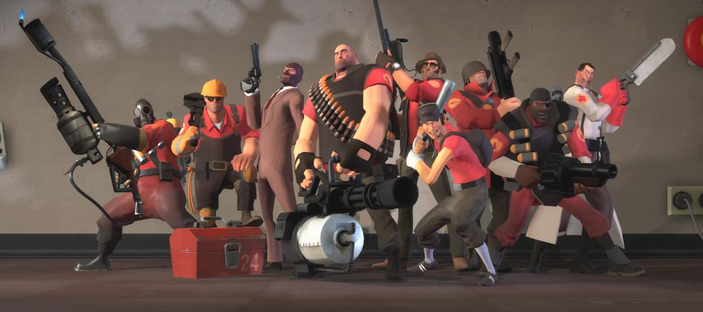

Who I am ?
25 ans toutes mes dents - Ancien etudiant en Reseaux et Telecommunications - Geek - Front end developer - Plus de 2 ans chez Infomaniak
QWERTY et photes
Infomaniak Network
- Fondee en 1996 par Fabian Lucchi et Boris Siegenthaler
- Hebergement de site Internet base a Carouge, Geneve - Suisse
- 40 collaborateurs
- 2/3 datacenter
- Plus de 100 000 domaines
- Top 3 en France
- 1300 partenaires
Les services
Qu'est-ce que je te vends ?
- Hebergement dedie et mutualise
- Nom de domaine
- VOD, Streaming Radio et Video
- Admin2
- Webmail (presque comme Gmail)
- Synchro contact et agenda
- SMS
- Client FTP web
- Billetterie via Entertainment
- Cine
La dream team

Qui fait quoi ?
- Administration et accueil
- UNIX
- Developpement
- Support
- Ergoland
Techno Web
Avec quoi ?
- HTML5
- PHP5, Codeigniter
- Javascript - Prototype, jQuery, AngularJS
- CSS3, Less, font icon
- Git, SVN
Historique ADMIN1 - ADMIN2 en developpement
Methodologie
Comment ?
- Mockup
- Developpement
- Test
- Beta
- Production
~ Extreme programming: en binome, test avant prod, refactoring car beaucoup de changement, ~ solution la plus simple
Mes conseils pour eviter pole emploi
T'as pas d'XP, t'es un noob et quand je tape ton nom sur le net je tombe sur ton profil DOTA
- Veiller les futures techno
- Etre visible (site Internet, afterwork, conference...)
- Avoir des projets perso (site perso / blog, hack, ...)
- Bosser l'anglais
- Utiliser le bon cote des choses
Merci
- Github
- Reveal.js
- Fontawesome.css
Questions ?
Cree par @_PandaJS